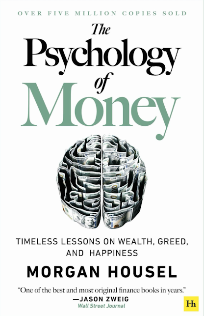

The Psychology of Money, by Housel
Sunday December 28, 2025
Housel had a blog post in 2018, and it was big enough that it became a book in 2020. It's wild how many books come about that way now; it's like your proposal has to go viral before you get a book deal.
The blog post and book are structured similarly enough that I think it's interesting to compare them.
The blog post was a list of 20 items. I think 7 of them don't really appear in the book at all, perhaps because they're too wonky or specific:
- (9) Attachment to social proof in a field that demands contrarian thinking to achieve above-average results.
- (10) An appeal to academia in a field that is governed not by clean rules but loose and unpredictable trends.
- (12) A tendency toward action in a field where the first rule of compounding is to never interrupt it unnecessarily.
- (15) An attachment to financial entertainment due to the fact that money is emotional, and emotions are revved up by argument, extreme views, flashing lights, and threats to your wellbeing.
- (17) A preference for skills in a field where skills don’t matter if they aren’t matched with the right behavior.
- (19) Political beliefs driving financial decisions, influenced by economics being a misbehaved cousin of politics.
- (20) The three-month bubble: Extrapolating the recent past into the near future, and then overestimating the extent to which whatever you anticipate will happen in the near future will impact your future.
The book, then, has 18 items: 13 from the blog post's list, and 5 that are new (at least new as whole sections). The book has an intro, and two other chapters in which are a summary and a breakdown of the author's personal money choices, and then there's a postscript with his "brief history of why the U.S. consumer thinks the way they do," which is something like "after WWII people got used to a little bit of equality and a little bit of debt, and now they're using too much debt to try to get back a little bit of equality".
Here are the book's chapters, with blog equivalents (original blog post numbering in parens) and notes:
- No One's Crazy: Your personal experiences with money make up maybe
0.00000001% of what's happened in the world, but maybe 80% of how
you think the world works.
- (5) Anchored-to-your-own-history bias: Your personal experiences make up maybe 0.00000001% of what’s happened in the world but maybe 80% of how you think the world works.
- Luck & Risk: Nothing is as good or as bad as it seems.
- (1) Earned success and deserved failure fallacy: A tendency to underestimate the role of luck and risk, and a failure to recognize that luck and risk are different sides of the same coin.
- Never Enough: When rich people do crazy things.
- This is the first new section, and it's about greed, in fairly extreme cases where successful people were found to have committed fraud even when you wouldn't think they'd need to. I think the section has noble intent but fails because (a) you have to believe that these people's earlier success was non-fraudulent, which is suspect (Madoff's earlier "success" was based on payment for order flow, it seems, which is illegal in Canada and disliked by many in the US) and (b) the general theme of avarice need not go so far as fraud to be worthwhile. See, for example, Your money or your life. On the other hand, maybe it's easier to talk about greed with extreme cases so that the reader can safely revile them without finding them familiar.
- Confounding Compounding: $81.5 billion of Warren Buffett's $84.5
billion net worth came after his 65th birthday. Our minds are not
built to handle such absurdities.
- (8) Underappreciating the power of compounding, driven by the tendency to intuitively think about exponential growth in linear terms.
- Getting Wealthy vs. Staying Wealthy: Good investing is not
necessarily about making good decisions. It's about consistently
not screwing up.
- (16) Optimism bias in risk-taking, or “Russian Roulette should statistically work” syndrome: An over attachment to favorable odds when the downside is unacceptable in any circumstance.
- This one is tangled up with 13, and indeed includes "the most important part of every plan is to plan on the plan not going according to plan" here too. The distinction, perhaps, is about not actively doing things that risk ruining you, as opposed to defensively protecting yourself from outside forces ruining you.
- Tails, You Win: You can be wrong half the time and still make a
fortune.
- This is a new one, about making lots of bets. Assuming no bet can kill you, you only need a minority of them to do really well in order to win.
- Freedom: Controlling your time is the highest dividend money pays.
- This appeared in the blog post in passing ("A key use of wealth is using it to control your time") but it's grown into a whole section and maybe even a theme in the book.
- Man in the Car Paradox: No one is impressed with your possessions
as much as you are.
- (3) Rich man in the car paradox
- Wealth is What You Don't See: Spending money to show people how
much money you have is the fastest way to have less money.
- (11) The social utility of money coming at the direct expense of growing money; wealth is what you don’t see.
- Save Money: The only factor you can control generates one of the
only things that matters. How wonderful.
- Also new, and quite explicitly advice.
- Reasonable > Rational: Aiming to be mostly reasonable works better
than trying to be coldly rational.
- There's some of the "avoid Russian roulette" idea here, but this is mostly new... It's a little bit like how the "snowball method" of paying off small debts first is often a bad idea financially - unless doing it that way makes the difference between paying off debt and not doing so. Also sort of related to the idea of knowing the price of things: there can be a psychological price, which can be meaningful for an individual.
- Surprise! History is the study of change, ironically used as a map
of the future.
- (6) Historians are Prophets fallacy: Not seeing the irony that history is the study of surprises and changes while using it as a guide to the future. An overreliance on past data as a signal to future conditions in a field where innovation and change is the lifeblood of progress.
- Vonnegut: “History is merely a list of surprises,' I said. 'It can only prepare us to be surprised yet again. Please write that down.” Housel has written it down.
- Room for Error: The most important part of every plan is planning
on your plan not going according to plan.
- (13) Underestimating the need for room for error, not just financially but mentally and physically.
- You'll Change: Long-term planning is harder than it seems because
people's goals and desires change over time.
- (4) A tendency to adjust to current circumstances in a way that makes forecasting your future desires and actions difficult, resulting in the inability to capture long-term compounding rewards that come from current decisions.
- Nothing's Free: Everything has a price, but not all prices appear
on labels.
- (2) Cost avoidance syndrome: A failure to identify the true costs of a situation, with too much emphasis on financial costs while ignoring the emotional price that must be paid to win a reward.
- You & Me: Beware taking financial cues from people playing a
different game than you are.
- (14) A tendency to be influenced by the actions of other people who are playing a different financial game than you are.
- He's talking about bubbles. People driving up bubbles are not long-term investors, he says.
- The Seduction of Pessimism: Optimism sounds like a sales pitch.
Pessimism sounds like someone trying to help you.
- (7) The seduction of pessimism in a world where optimism is the most reasonable stance.
- When You'll Believe Anything: Appealing fictions, and why stories
are more powerful than statistics.
- (18) Denial of inconsistencies between how you think the world should work and how the world actually works, driven by a desire to form a clean narrative of cause and effect despite the inherent complexities of everything involving money.
- All Together Now: What we've learned about the psychology of your
own money.
- This is just a summary, as the heading suggests.
- Confessions: The psychology of my own money.
- And here the author describes his own money choices, which I find reasonable.
It's not all great, but it's not bad. Mostly reasonable advice, I think. I feel like I agree with this guy. The repeated focus on survival, for example, fits well with my ongoing vendetta against expected value as the be-all and end-all of decision-making.

Most of the reason why, I believe, is that we think about and are taught about money in ways that are too much like physics (with rules and laws) and not enough like psychology (with emotions and nuance).
Someone else agreeing with you is like evidence of being right that doesn’t have to prove itself with facts.
Money has competition, rules, upsets, wins, losses, heroes, villains, teams, and fans that makes it tantalizingly close to a sporting event.
Everyone just believes what they want to believe, even when the evidence shows something else. Stories over statistics.
The New York Times wrote in 1955 about the growing desire, but continued inability, to retire: “To rephrase an old saying: everyone talks about retirement, but apparently very few do anything about it.”
Mr. Madoff’s firm can execute trades so quickly and cheaply that it actually pays other brokerage firms a penny a share to execute their customers’ orders, profiting from the spread between bid and ask prices that most stocks trade for.
The End of History Illusion is what psychologists call the tendency for people to be keenly aware of how much they’ve changed in the past, but to underestimate how much their personalities, desires, and goals are likely to change in the future.
Jason Zweig, the Wall Street Journal investment columnist, worked with psychologist Daniel Kahneman on writing Kahneman’s book Thinking, Fast and Slow. Zweig once told a story about a personality quirk of Kahneman’s that served him well: “Nothing amazed me more about Danny than his ability to detonate what we had just done,” Zweig wrote. He and Kahneman could work endlessly on a chapter, but:
The next thing you know, [Kahneman] sends a version so utterly transformed that it is unrecognizable: It begins differently, it ends differently, it incorporates anecdotes and evidence you never would have thought of, it draws on research that you’ve never heard of.
“When I asked Danny how he could start again as if we had never written an earlier draft,” Zweig continued, “he said the words I’ve never forgotten: ‘I have no sunk costs.’”
Bubbles form when the momentum of short-term returns attracts enough money that the makeup of investors shifts from mostly long term to mostly short term.
And since big events come out of nowhere, forecasts may do more harm than good, giving the illusion of predictability in a world where unforeseen events control most outcomes.
We’re so far committed to the independence camp that we’ve done things that make little sense on paper. We own our house without a mortgage, which is the worst financial decision we’ve ever made but the best money decision we’ve ever made. Mortgage interest rates were absurdly low when we bought our house. Any rational advisor would recommend taking advantage of cheap money and investing extra savings in higher-return assets, like stocks. But our goal isn’t to be coldly rational; just psychologically reasonable.
The independent feeling I get from owning our house outright far exceeds the known financial gain I’d get from leveraging our assets with a cheap mortgage. Eliminating the monthly payment feels better than maximizing the long-term value of our assets. It makes me feel independent. I don’t try to defend this decision to those pointing out its flaws, or those who would never do the same. On paper it’s defenseless. But it works for us. We like it. That’s what matters. Good decisions aren’t always rational. At some point you have to choose between being happy or being “right.”
One of my deeply held investing beliefs is that there is little correlation between investment effort and investment results.
Benedict Evans says, “The more the Internet exposes people to new points of view, the angrier people get that different views exist.”